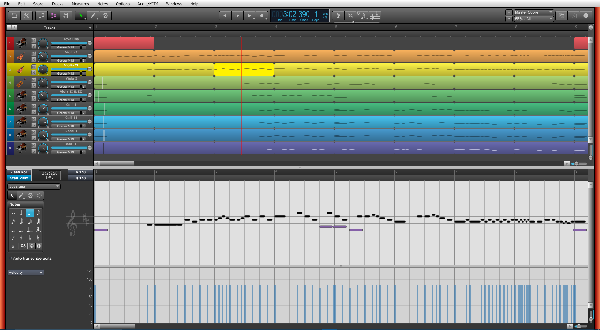

Data View
Choose this command to open or close the Data View.
NOTE: If you Ctrl[Cmd] the Data View button while in Linear View, only the bottom half will appear.

Overture lets you edit the events in your songs in dozens of different ways. The Data View lets you add and edit notes, controllers, and automation data interactively, using a graphic display. Overture's many editing commands can improve the quality of recorded performances, filter out certain types of events, and modify the tempos and dynamics of your songs.
The Data View Window is divided into two main views, the Track List and Graphic views.
Each view is described below
Track list View
The Track list View displays each track with a header and a horizontal list of measures. Each track header displays the track name, track icon, and track controls for muting, soloing, and setting MIDI volume and Pan.
To select measures in the Track list double click inside the measure to select the entire measure or drag a rectangle over several measures. Selected measures will be outlined with a white rectangle.
We may occasionally refer to the measures as track data.
With selected measures, you can use the same Score View commands such as, copy, cut, erase, Transpose, etc..
In addition you can do several other commands with your mouse.
To set track list view options click on the small arrow at the top of the track headers:
NOTE: You can also set the track heights and widths using small sliders at the right side of the Track list view or by using your mouse wheel and holding down the Alt[Option] key.
The Graphic View
The Graphic view displays all notes and other events from a single track in a grid format using Overture's unique hybrid staff or a traditional sequencer piano roll. You can switch between the two views by clicking on the Piano Roll or Staff View buttons.
The Graphic view has two main panes: the Note pane and the Controllers pane. When you first open the Graphic View, both note and controller panes are displayed. There is a horizontal divider bar that can be dragged to change the vertical distance of each pane. Double click on the divider to open or close the bottom (Controller pane) at the bottom. Drag the gray splitter bar up to display the Controllers pane.
Notes are displayed as horizontal bars, and drum notes as diamonds. Pitch runs from bottom to top, with the left vertical margin indicating the pitches as piano keys or note names. Time runs left to right with vertical measure and beat boundaries. The Graphic window facilitates adding, editing, and deleting notes.
The Zoom tools at the right side of the view let you change the vertical and horizontal scale of the view. You can also use your mouse wheel by holding down the Alt[Option] key.
The Snap Grid button snaps note start times and durations to the snap grid resolution. You can set the resolution to any note length in the Snap Grid pop-up menu.
Selecting and Editing Notes
To select notes in the Graphics window:
or
Shift-click to add notes to the selection and Control[Cmd]-click to toggle between adding to or removing from the selection.
You can add notes to your score by clicking in the Note pane with the pencil tool. Overture remembers the velocity, duration, and channel of the note that you most recently moved, edited, or deleted, and uses these same characteristics for new notes automatically. You can edit notes freely, using the mouse to change the start time, pitch, or duration. You can move and copy notes anywhere in the track.
You can scrub the current track. The Scrub tool lets you drag a vertical bar over the view so that you can hear the notes in the track. You can scrub forward or backward at any speed. Scrubbing can be handy when you want to locate a bad note or listen to the effects of changes you have made without playing back at normal speed.
IMPORTANT: Overture allows you to change start and end times without changing the note's notation. EX. the end of a quarter note can be dragged to the duration of a half note. This can be very valuable when creating very accurate sounding scores. But, this can also result in unexpected playback. So be careful when changing start and end times. If you are unsure about your edits you can avoid this unexpected behavior by checking the Auto-transcribe edits check box. If checked, Overture will automatically re transcribe notes whose start and end times have been changed.
To Select Notes with the Selection Tool
To do this |
Do this |
Select a single note |
Click on the note |
Select several notes at once |
Drag a rectangle around the notes you want to select |
Add to the selection |
Hold the Shift key while selecting notes |
Toggle the selection |
Hold the Control[Cmd] key while selecting notes |
Selected notes are highlighted in the Piano Roll view, and the time selection is set to the range of note start times.
To Select All Notes of Certain Pitches
Click the piano keys or note names on the left side of the Note pane as shown in the table:
To do this |
Do this |
Select all notes of a single pitch |
Click on the piano key or note name |
Select all notes of several pitches |
Drag across the keys or note names |
Add to the selection |
Hold the Shift key while clicking on a piano key or note name |
Toggle the selection |
Hold the Control[Cmd] key while clicking on a piano key or note name |
To Edit a Note
Choose the Pencil tool.
To do this |
Do this |
Change the start time |
Drag the left edge of the note in either direction. The note duration stays the same, but the start time is shifted. |
Change the pitch |
Drag the middle of the note up or down. |
Change the duration |
Drag the right edge of the note in either direction. |
To Change Note Velocity
To Move Notes
To Copy Notes
To Add a Note
To Erase a Note
To Erase Several Notes
To Select and Erase Notes
To Scrub the Song
Percussion, Drum Notes, and Note Names
If you are editing a track that is routed to a percussion instrument, the Graphics pane automatically configures itself in drum mode. In drum mode, the names of the various percussion instruments replace the piano keys. This means it is easy to change percussion notes from one instrument to another or to select and edit the notes played by a single percussion instrument.
To display drum note names:
Controllers View
The Controllers view, the lower half of the Graphics pane, lets you edit tempo and MIDI data such as controller, velocity, and pitch wheel.
Controllers
Overture lets you enter or edit controller and automation data using the Controllers pane in the Graphic pane.
MIDI hardware and software use controllers, special types of events, to control the details of how MIDI music is played. They use automation data to adjust volume, pan, and other parameters of MIDI and audio tracks on the fly while playback is in progress.
Controllers are the pedals, knobs, and wheels on your electronic instrument that you use to change the sound while you're playing. For example, a sustain pedal and a modulation wheel are two controllers commonly found on keyboards.
Controllers let you control the detail and character of your music. Say you're playing a guitar sound on your synthesizer, but it sounds lifeless and dull. That's partly because a guitar player doesn't just play notes one after another — he often bends or slides on the strings to put emotion into his playing. You can use controllers in the same way, creating bends, volume swells, and other effects that make sounds more realistic and more fun to listen to.
Your computer can work the controllers on your electronic instrument by sending MIDI Controller messages. The MIDI specification allows for 128 different types of controllers, many of which have standard usages. For example, controller 7 is normally used for volume events, and controller 10 is normally used for pan. Every controller can take on a value ranging from 0 to 127.
The Graphic window tool bar contains two drop-down lists, Data type and Controller, that let you choose the controller or data you want to see and edit. The contents of these lists depend on the port and channel settings and on the instrument assigned to that port and channel. Different instruments use controllers in different ways. Overture uses the information found in it's Instrument Definition files. These are assigned in the MIDI Settings dialog.
Overture has automatic search back for all continuous controller data to ensure that the correct controller values are in effect regardless of where you start playback. Suppose you start playback halfway through a song. Overture searches back from that point to find any earlier controller values that should still apply.
Velocity, Pitch Wheel, and After touch
Overture lets you display and edit several other types of data the same way you do controller data. These data depend on your port and channel settings and on the instruments assigned to them. The may include, for example:
NOTE: Hairpins, expressions, and dynamics that contain controller data will also be shown and can be edited, but they can not be entered in this view.
Note velocity is an attribute of each note and not a completely separate event. You cannot add or remove velocity events in the Controllers pane, but you can use the pencil and straight line tools to adjust the velocity values for existing notes. You can also edit velocities with the Notes>Modify Notes command.
Using the Controllers Pane
The Controllers pane is the most powerful and flexible way to edit data. The Controllers pane is the lower half of the Graphic window.
To display the Controller pane, drag the splitter bar at the bottom of the Graphic window up.
The Controllers pane looks like a graph; the horizontal axis represents time, and the vertical axis represents the event values. Each event appears as a single vertical line, and the height of this line shows the value of the event. The Controllers pane shows events for a single track. You can only see one type of controller at a time. You can zoom in and out on the Controllers pane using the zoom in and zoom out buttons in the scrollbar. To zoom all the way in or out in a single step, hold the Shift key while you click on the tool.
Selection methods in the Controllers pane are similar to those in other views. Here is a summary:
The Controllers pane has the same tools you use to edit notes; use them to add or modify controller events:
Tool Name |
How it's used |
Select |
Select controller events, so you can delete them |
Pencil |
Draw a custom curve indicating changes in controller value There are several variations of the Pencil tool. 1. Straight line - Draws a straight line indicating a steady increase or decrease in controller value 2. Parabola - Draws a parabola line indicating a exponential increase or decrease in controller value 3. Random -- Changes values with the drawn rectangle. |
Erase |
Erase controller changes already in place |
Scrub |
Drag horizontally to hear the notes as you drag over them. |
When you use a Draw tool, the density of controller events is set by the current grid setting and the speed at which you drag. To insert a larger number of controller events with relatively small changes in value, move the mouse slowly. To insert a smaller number of controller events with relatively large changes in value, drag the mouse quickly.
Creating a change that sounds smooth does not always require making the value change by one on each unit. Bigger jumps may sound very gradual if the tempo is fast. Also, many devices round off the controller values. For example, many instruments respond to volume controller values of 100 and 101 with exactly the same loudness. Using too high a density of controller events can backfire by making the computer work so hard during playback that it is unable to keep up. This will usually cause hiccups or poor timing during playback.
Controller events are inserted using the current voice as set in the View Menu. The data is drawn using the track's color as set in Preferences Dialog. When the current voice is set to All Voices, Voice 1 will be used when inserting and editing. When the current voices is set to a specific voice, it is drawn in the track's color and all other voices are drawn in light gray.
To Display Controller, Velocity, Pitch-Bend, After touch, or Tempo Data
To see this |
Do this |
Controller data |
Choose Control from the data type menu in the tool bar, and then choose the controller from the controller menu |
Velocity data |
Choose Velocity from the data type menu in the tool bar |
Pitch-bend data |
Choose Wheel from the data type menu in the tool bar |
Aftertouch data |
Choose ChanAft from the data type menu in the tool bar |
Tempo data |
Choose Tempo from the data type menu in the tool bar |
Overture displays the data in the controllers pane.
To Insert a Controller Value
To Draw a Linear Series of Controllers
To Draw a Series of Controller Value Changes
To Remove or Erase Controllers
To Drag Controller Data